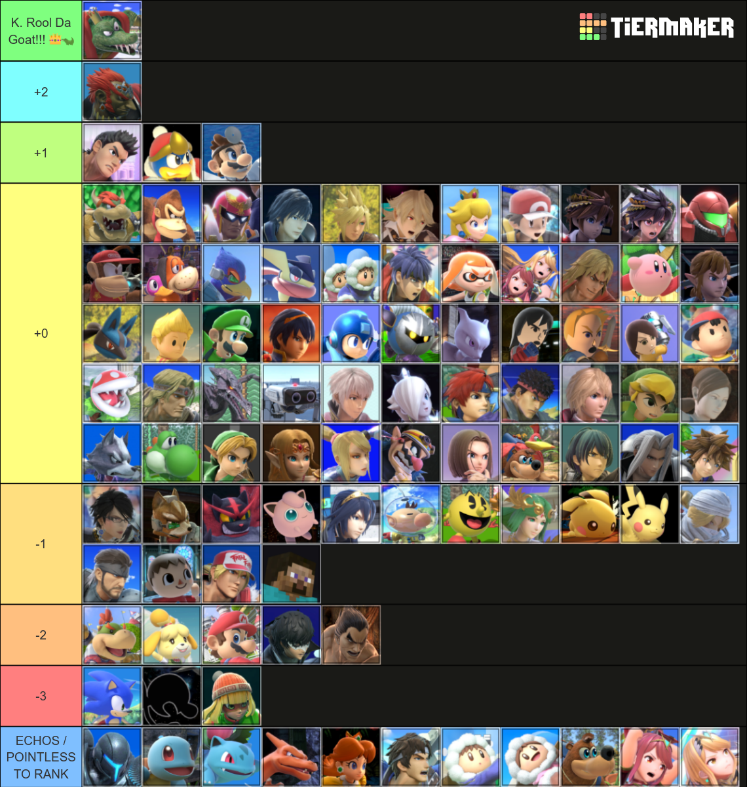
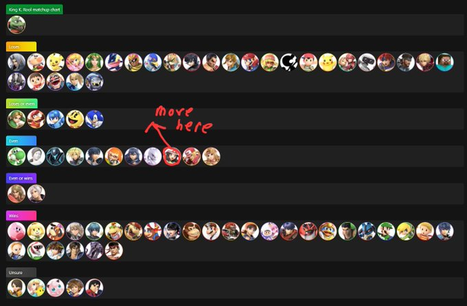
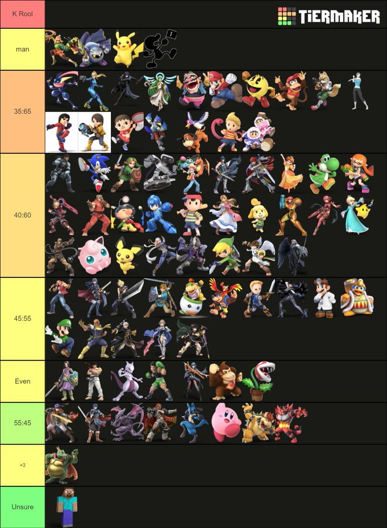

Your browser does not support the video element.
Home
What Is Smash Bros.?
My Smash Ultimate Mains
About King K. Rool
About Sonic
Matchup Charts: Sonic
The Competitive Scene
Recommended Equipment
Fun Facts About Smash Bros.
King K. Rool has a lot of losing matchups, making him a pretty difficult character to harness at top level play, even if he is considered a very easy character to play as at lower levels of play.
Below are matchup charts from me (RIBOIMAN), the best K. Rool player in the world (Lukewarm), and the 2nd best K. Rool player in the world (Ben Gold). Generally, you would want to reference a top player's matchup chart over some random person's such as mine, especially if you are interested in counterpicking or want to practice bad matchups.
Mine (Left), Lukewarm's (Formerly Kirbykid, Middle), and Ben Gold's (Right) King K. Rool Matchup Charts
RIBOIMAN
Lukewarm
Ben Gold



Home
What Is Smash Bros.?
My Smash Ultimate Mains
About King K. Rool
About Sonic
Matchup Charts: Sonic
The Competitive Scene
Recommended Equipment
Fun Facts About Smash Bros.